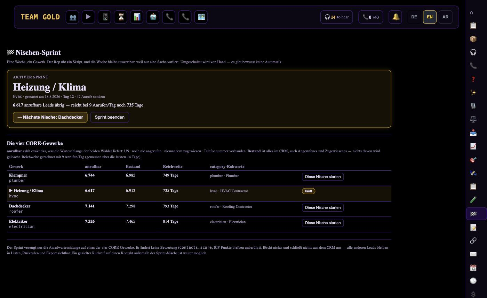
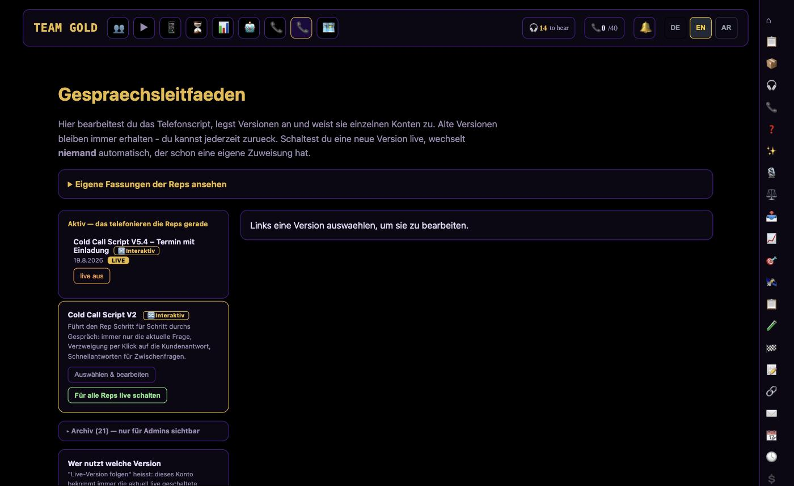

Portfolio
Over the past months I designed, built, and now personally operate a full stack of production software for a real cold-calling sales business — from the CRM the reps use every day down to the AI agents and self-healing infrastructure that keep it all running. Below is the full list, not just the highlight reel.
Don't want to read through all 25 projects? Ask — it answers from my real CV, goals and project write-ups, and says "I don't know" instead of guessing.
The quick buttons above answer instantly, for free, from fixed text. Typed questions go to a small AI (Groq, free tier) that only answers from my real CV/portfolio — limited to a few questions per visitor per day to keep it available for everyone.
25 systems across five areas — four of them public on GitHub with tests and CI, linked below. The detailed write-ups follow; this is the map.
Four systems, in active daily production use. Source code stays private where it touches real customer data — one of the four is fully public and linked below. What's shown for the rest is the architecture, the scale, and the specific engineering problems each one solved.
A Next.js CRM built for a real cold-calling sales team: browser-based softphone dialing over WebRTC/Telnyx, an outbound AI voice agent that can run its own call shifts, live call recording and two-channel transcription, and a lead-scoring engine that decides who gets called next.


Next.js talks to Postgres through Supabase — row-level security policies enforce who can see which contacts at the database layer, not just in application code, so a bug in a page component can't leak another rep's leads. The call script itself is versioned rows in the database rather than code, so a wording change ships without a deploy.
Every schema change ships with an explicit fallback path — a missing column degrades a feature instead of crashing the page. The outbound AI voice agent carries its own spend cap, a compliance-driven call-window check, and a kill switch that no single misconfigured toggle can override.
A always-on scraping and enrichment pipeline that finds local businesses, checks whether they still exist, reads their websites for real signals (hiring activity, ad spend, tech stack), and turns all of that into a single, explainable priority score — running continuously, watched by its own health checks.
Two independently-built scrapers cross-verify each other's output before a lead is scored. Every long scan pages through the database by a stable cursor rather than a plain offset — offset pagination silently drops or duplicates rows the moment something else writes to the table mid-scan, which a one-off scan will never catch.
A background watchdog restarts the scraper process, but only after confirming actual CPU activity over a time window — a crashed browser sub-process looks identical to a healthy one if you only check whether the PID still exists.
Instead of a single AI assistant, this is an operating layer: a library of reusable agent "skills," a policy that routes each task to the right model and effort level, scheduled autonomous work, and a Telegram-based approval channel so a human makes the handful of decisions that actually matter — money, access, and direction — while everything routine runs unattended.
Tasks route through an explicit, versioned scoring policy across model and reasoning-effort tiers instead of picking a model by feel — the same policy a human can read and audit. A background daemon runs the scheduled work; it's watched by a second, independent process whose only job is noticing when the first one goes silent.
Anything with a cost — a paid API call, an outbound message — routes through a structured approval gate to a human before it executes. The kill switch is checked at the one place every path funnels through, not duplicated across call sites that could disagree.
A dependency-free pre-commit hook and GitHub Action that stops API keys from reaching a commit — written after a real incident where five live credentials sat exposed in a repo for months, unnoticed until a backup was being prepared.
Detection is pattern-based, scored against a hand-labelled corpus of 61 real and synthetic cases rather than tuned by eye — the benchmark gates CI, so a regression in a security tool fails the build instead of going unnoticed.
Runs entirely locally as a git hook — a secret never has to leave the machine to be checked. Findings are always masked in output; a scanner that prints the full credential into a terminal and a CI log has made the problem worse, not better.
The tool had never been measured. Building a labelled corpus of 61 cases surfaced three bugs, all false negatives — the failure mode that matters in security work, because it looks exactly like success.
// see EXAMPLE in a
trailing comment went through silently.Recall went from 80 % to 100 %, precision from 91.4 % to 100 %, measured — and the benchmark now gates CI, so a regression fails the build instead of going unnoticed.
Two more things only real delivery teaches: GitHub's own push protection blocked the first push, because its scanner could not tell my synthetic test token from a live one — fixed by assembling fixtures from parts rather than weakening the check. And the CI matrix caught a genuine Python 3.9 incompatibility that a machine running 3.12 could never have surfaced.
Every system, filterable. Smaller in scope than the four case studies above, but each one is a real, independently working subsystem — not a stub.
Two deliberately independent scoring layers — a geometric-mean need/budget/reachability score, and a separate ICP-fit score with its own confidence metric — so one can never silently overwrite the other's meaning.
Merges signals from several independent observation sources into one profile per contact — and reports "how much do we know" (confidence) separately from "how fresh and complete is it" (quality) instead of blending them into one misleading number.
Parses a business's own website for hiring activity, ad-spend evidence, tech stack, and multi-location signals — extracting more from data already being fetched instead of paying for a new third-party source.
Splits recorded calls into separate customer/agent audio channels before transcription. Single-channel transcription let the model guess who was speaking from context alone — measurably less accurate once compared side by side.
LLM-generated feedback for sales reps, gated behind a human approve/edit/reject workflow before a rep ever sees it — plus a deliberately "blind" grading mode so a review isn't biased by seeing the AI's verdict too early.
Coordinates email (mailbox warm-up ramp across a rotating pool), a queued/human-sent LinkedIn channel, and a channel-comparison layer that explicitly labels which numbers are measured vs. self-reported.
A test-cohort system with independent locks that keep test leads out of every production automation, plus a self-releasing batch mechanism that scales exposure with real call volume — no one has to click a button to advance it.
Built Model Context Protocol servers exposing read-only business data and a security-testing toolkit to an LLM agent, with scope-gated safety defaults that stay off by default until explicitly widened.
A Telegram-based approval bridge that lets a long-running autonomous agent pause and ask a real human before any money-, access-, or direction-level decision, then resumes automatically once answered.
A scored, versioned policy deciding which LLM and how much reasoning effort a task should get, across eight escalation signals — instead of re-guessing per task or defaulting to the most expensive model every time.
A separate monitor that checks whether the checker is still alive — built after a background daemon died silently for three days while every scheduled job still displayed as "configured."
Wraps industry-standard recon tools (nmap, nikto, sqlmap, whatweb) behind a scope-gated safety layer that defaults to local/private targets only — used for personal bug-bounty and pentesting practice.
A legal calling-hours check, kept strictly separate from reachability scoring — the two answer different questions, and conflating "unlikely to answer" with "not allowed to call" would quietly throw away good leads.
A rep pool rings first on every inbound call, with a server-enforced lock that forces a voicemail fallback regardless of what any dashboard toggle or database row says — the safety property lives in code, not in configuration.
Rotates which market segment the whole calling operation focuses on each week, driven by measured rep success rates instead of a self-assigned fit score that turned out to reward its own assumptions.
RSS-based channel monitoring with no paid API, feeding an LLM pipeline that automatically extracts business and engineering lessons from long-form video content.
A single-file, build-free web app for learning Quranic Arabic vocabulary: 500+ words, word-by-word sentence breakdowns, and custom vocabulary import. Shipped and live at a public URL.
A chess engine, a crypto-trading backtester, and a handful of classic learn-to-code exercises (calculator, Hangman, a text adventure). Kept private now, but this is the actual starting point for everything above.
The public site for the business the systems above serve —
full EN/DE translations with correct hreflang,
four JSON-LD schema types, and a font-loading strategy that
doesn't block first paint. Live at teamgoldllc.de →
Everything above runs on two servers I administer myself — a Windows box and an Ubuntu ARM instance in Oracle Cloud. Not a managed platform where hardening is somebody else's job.
The agent service runs as its own unprivileged user with no sudo, inside a systemd sandbox: home directory read-only, and an explicit allowlist of the few paths it may write to. A compromised agent process cannot reach anything it was not handed.
SSH password authentication disabled entirely — keys only, one
per machine so access can be revoked per device rather than all
at once. Host firewall and fail2ban in front of it.
Debug and automation ports bind to loopback, never
0.0.0.0 — the difference between a local tool and an
open service.
Credentials sit in the OS keystore, not in files. That rule is enforced by a tool rather than by discipline: git-secret-scan blocks the commit, and the same check runs again in CI for anyone who skipped the hook.
The security tooling (nmap, nikto, sqlmap and friends) is wired up behind a target check that refuses anything outside localhost and private ranges unless it is deliberately unlocked. An LLM-driven scanner without that gate is one bad prompt away from scanning a stranger.
The sandbox allowlist above was, at first, too tight. A legitimate tool started failing with a permission error, and the obvious reading was "the tool is broken" — it wasn't. My own hardening was denying a write path the tool genuinely needed.
The fix was to point the tool at a directory inside the sandbox rather than to widen the sandbox, so the restriction stayed intact. That is the part worth keeping: the failure mode of good hardening is that it breaks your own things first, and the temptation every time is to loosen the rule instead of moving the thing. I have done this to myself more than once — port changes, firewall rules, key-only SSH — and each time the useful question was "what exactly is being denied, and why", never "how do I turn this off".
None of this is a certification. It is two servers I keep running in production, where the blast radius of getting it wrong is my own business.
What actually shipped the systems above — not an aspirational list.
Three pieces of the real logic above, ported to run in this page — open by default. Collapse one if you'd rather scroll past it than poke at it.
The CRM decides who gets called next. The first version multiplied need × budget × reachability — mathematically reasonable, and it quietly destroyed the ranking. Drag the sliders.
All 9,261 combinations of the three inputs in steps of 5, bucketed
into 20 bins. Grey is the old formula, gold the new one. This is a
property of the two formulas, not a claim about anyone's data.
On the real dataset the collapse was measured: 9,400 of
59,725 leads landed on the identical score 35. A ranking
that puts thousands of leads on one point is not a ranking, and
the dialer only ever loads the first page of it.
The real patterns from git-secret-scan, ported to JavaScript for this page. Four lines are pre-filled, each producing a different verdict — a catch, a placeholder, the prose that caused a real false positive, and an explicit opt-out.
Runs entirely in your browser. This page makes no network requests of any kind — nothing you type leaves it.
Paging through a list ordered "newest first" with a plain
OFFSET while the table keeps changing underneath the
scan. Press play — both lanes read the same 11 rows, the same two
writes happen mid-scan (a row inserted, then a row deleted), and only
one lane gets it right.
OFFSET n LIMIT 30 duplicates · 0 skippedWHERE id < last_seen LIMIT 30 duplicates · 0 skippedRow 11 gets inserted, then row 6 gets deleted — both mid-scan, exactly the timing that broke this in production.
This is the real mechanism, run live — not a recorded outcome. On the
actual dataset it was measured directly: a 20-minute scan with 43
concurrent inserts produced exactly 20 duplicate reads
under offset pagination. The skip direction shown above is the same
mechanism in reverse, reproduced separately — it wasn't caught in
that specific measurement window, which is itself the point: a
silently skipped row doesn't show up as an error, only as a gap you'd
have to already know to look for. Every long-running scan in that
codebase now pages by a stable cursor instead
(scripts/lib/blaettern.mjs).
Three real patterns from the systems above (renamed, generalized — no business data), and one small tool you can actually run.
// Priority score: geometric mean, not a raw product.
// A raw product crushed almost the whole dataset toward zero;
// reachability acts as a multiplier band, not a third equal factor.
const core = Math.sqrt((need / 100) * (budget / 100));
const factor = 0.5 + (reachability / 100) * 0.8;
const priority = Math.min(1000, 1000 * core * factor);Fixed a bug where thousands of leads landed on the exact same score — the dialer's "best next call" was silently random.
// Offset pagination breaks under concurrent writes: rows get
// skipped or duplicated mid-scan. A cursor doesn't care what
// happened before it — it only knows the last id it saw.
let lastId = 0;
while (true) {
const rows = await db.query(
`select * from contacts where id > $1 order by id asc limit $2`,
[lastId, PAGE_SIZE]
);
if (rows.length === 0) break;
process(rows);
lastId = rows[rows.length - 1].id;
}Two "complete" scans of the same table were quietly returning different totals until this replaced a plain offset loop.
// "Off" always means off — not "off unless five different
// code paths all happen to agree." Every response is rewritten
// through one choke point before it's ever sent.
function sendInboundResponse(xml: string): string {
if (INBOUND_AI_LOCKED && containsAiAssistant(xml)) {
return VOICEMAIL_FALLBACK_XML; // hard override, not a suggestion
}
return xml;
}The safety property lives in code, at a single choke point — not spread across a dashboard toggle, a database row, and a config flag that all have to agree.
Four repositories are public, each with tests, CI and a README that explains the trade-offs — git-secret-scan is a Featured system above, measured recall 80 %→100 %. yt-transcript · gitingest · fahm
I build fast by directing AI coding agents deliberately — writing the specification, setting the guardrails, and verifying the result — rather than typing every line by hand. That's a real, current skill: the systems above aren't demos, they run a real business every day, and treating "the agent said it's done" as a claim to verify rather than a fact was the single habit that mattered most in building them.
No customer data, phone numbers, or business metrics appear anywhere on this page or in the linked repositories — the projects above are described by their architecture and the problems they solved, not by their private source. Numbers are rounded, not exact.
I didn't come to this through a computer science degree. The short version:
No university degree — what replaced it was building real systems, operating them, and fixing what broke.
Based in Germany, open to engineering roles. Booking a slot is the fastest route — pick a time and it is in both calendars.